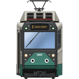
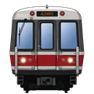
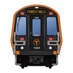

Any edits you make (roster changes, GLTPS reports, notes, and more) are visible to everyone using this app, shown alongside your first name. You can change your display name anytime in Settings.
Checking access…
You don't have access
This page is for signed-in moderators only.



In the Loop
G
Settings›
Fleet Roster›
Green Line Inspectors›
Points›
Bugs & Feature Requests›
Moderation›
Alerts and Notifications›
Edit Logs›
Boston College
Connecting…
Please check your internet connection. If it is on and working, that means the MBTA's live data feed is currently unreachable due to an outage on their end. This is not an issue with In the Loop.
No trains are currently running for the night. If this seems incorrect, report it in the Discord server: discord.gg/KmGGY75rn4
Status, livery/wrap, and notes can only be edited while signed in; edits show the display name of whoever last saved them.
Moderation
—
‹ Back
Alerts and Notifications
—
‹ Back
Disruption Mode
During major disruptions (shuttle buses, single-tracking, etc.), trains can legitimately drop out of MBTA's live feed for longer stretches. Enabling this extends how long a train stays visible at its last known position after going quiet — from 10 minutes up to 25 — for everyone using the app.
Push an Alert
Sent to all users immediately when confirmed.
Alert text
Expires in
Push a Notification
Sent to all users immediately when confirmed.
Subject
Message
Expires in
Edit Logs
—
‹ Back
Filter by user
Points
—
‹ Back
Green Line Inspectors
—
‹ Back
CI = Chief Inspector · MCI = Mobile Chief Inspector
Bugs & Feature Requests
—
‹ Back
Report bugs or suggest features in the In the Loop Discord server. Feature requests aren't guaranteed to be implemented.